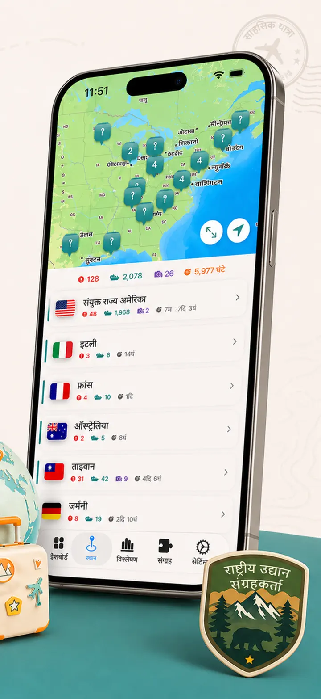
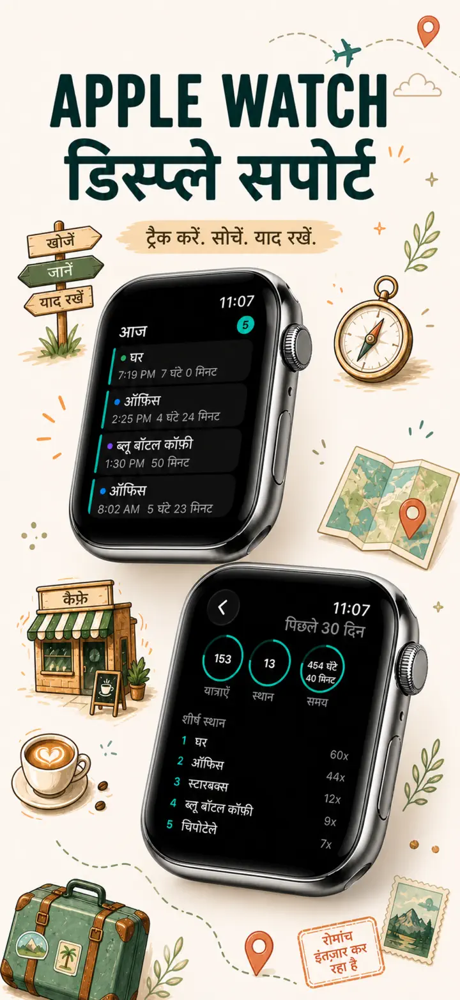
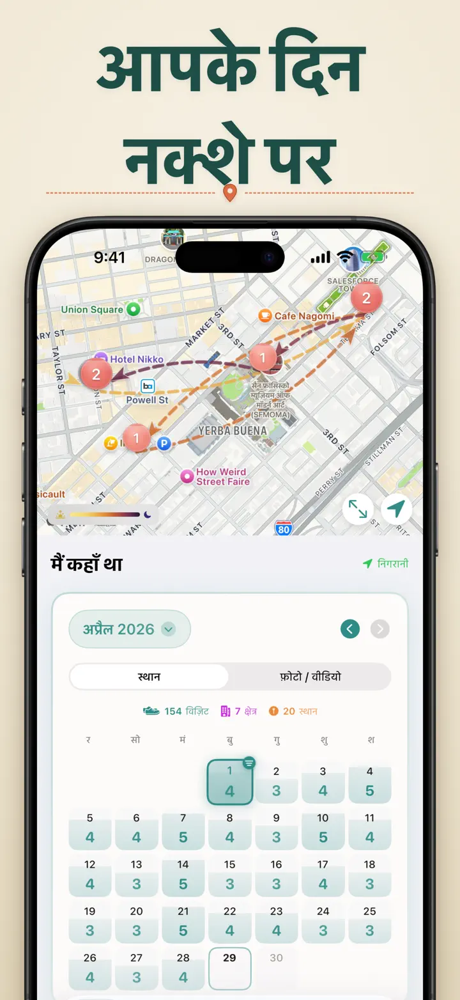
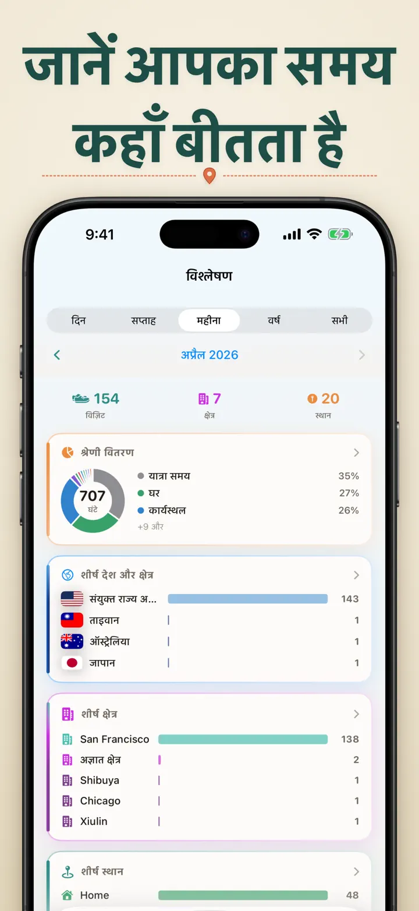
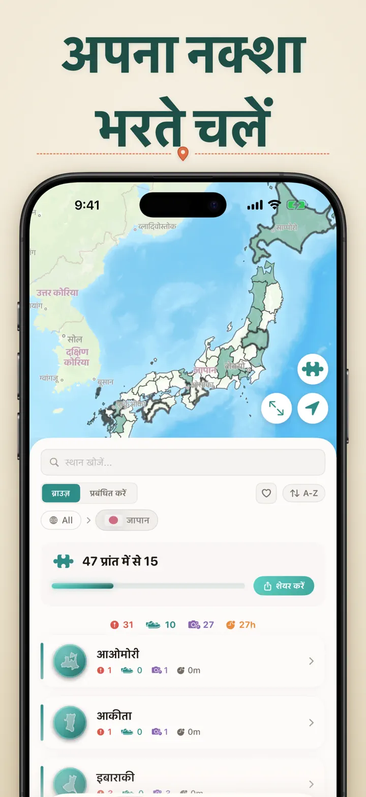
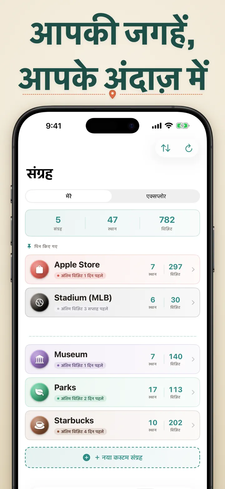
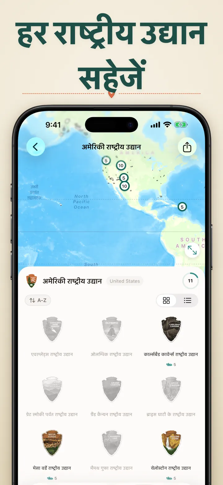
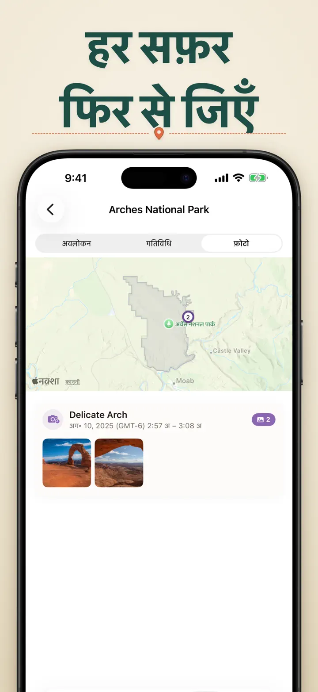

मैं कहाँ था
जगह/फोटो ट्रैक और प्रगति
नया: जापान के 103 इचिनोमिया मंदिर, हर एक का अपना उकेरा गया बैज। ऑटोमैटिक विज़िट ट्रैकिंग और प्राइवेट टाइमलाइन, सब आपके डिवाइस पर।
App Store से डाउनलोड करेंऐप के बारे में
मैं कहाँ था ? — आपकी पर्सनल लोकेशन मेमोरी
पिछले महीने वाला वो शानदार रेस्टोरेंट याद है? या ऑफिस बनाम घर में बिताया टाइम? मैं कहाँ था ? आपकी विज़िट्स अपने आप ट्रैक करता है और आपकी लाइफ जर्नी की खूबसूरत टाइमलाइन बनाता है।
ऑटोमैटिक ट्रैकिंग
मैन्युअल लॉगिंग की ज़रूरत नहीं। ऐप चुपचाप रिकॉर्ड करता है कि आप कब पहुँचे और कब निकले, बिना मेहनत के डिटेल्ड विज़िट हिस्ट्री बनाता है।
स्मार्ट कैलेंडर व्यू
अपनी विज़िट्स दिन, हफ्ते या महीने के हिसाब से देखें। इंट्यूटिव कैलेंडर एक नज़र में विज़िट काउंट और यूनिक प्लेसेस दिखाता है। किसी भी दिन पर टैप करें।
HOME और LOCK-SCREEN WIDGETS
मीडियम Home Screen widget के साथ अपनी हाल की विज़िट्स एक नज़र में देखें। Lock Screen widgets आपकी मौजूदा लोकेशन, लाइव ड्वेल टाइमर, या आज की विज़िट काउंट दिखाते हैं — सभी टैप करने पर सीधे ऐप खोल देते हैं।
ऑर्गनाइज़्ड लोकेशंस
लोकेशंस ऑटोमैटिकली रीजन और शहर के हिसाब से ग्रुप होती हैं। कस्टम कैटेगरीज़ असाइन करें जैसे होम, वर्क, जिम, कैफे। अपने आइकन्स और कलर्स के साथ खुद की कैटेगरीज़ बनाएं।
पावरफुल एनालिटिक्स
अपनी लाइफ में पैटर्न्स खोजें:
- कैटेगरीज़ में टाइम डिस्ट्रीब्यूशन
- आपके सबसे ज़्यादा विज़िट किए गए प्लेसेस
- वीकली रिदम एनालिसिस
- विज़िट फ्रीक्वेंसी ट्रेंड्स
- प्रति-लोकेशन स्टे-ड्यूरेशन चार्ट — देखें आप आमतौर पर कितनी देर रुकते हैं, दिन, हफ्ते, महीने या साल के हिसाब से
देश-क्षेत्र संग्रह
अपनी यात्राओं को पज़ल बनाएं! देखें हर देश में कितने राज्य या क्षेत्र घूमे। दोस्तों को प्रेरित करने के लिए अपनी प्रगति खूबसूरत पज़ल इमेज के रूप में शेयर करें।
नेशनल पार्क प्रगति
प्रकृति को एक्सप्लोर करें! नेशनल पार्क की विज़िट्स ऑटोमैटिकली लॉग करें और डेली लोकेशंस के साथ-साथ प्रगति ट्रैक करें।
100 प्रसिद्ध जापानी किले
जापान की यात्रा कर रहे हैं? एक नया बिल्ट-इन कलेक्शन देश के 100 प्रसिद्ध किलों की आपकी विज़िट्स ट्रैक करता है। इसे Collections टैब → Explore → Japan में पाएं।
कस्टम कलेक्शंस
जो चाहें ट्रैक करें — Apple Stores, म्यूज़ियम, ब्रूअरीज़, बुकशॉप्स। कलेक्शन बनाएं, कीवर्ड्स सेट करें, और यह अपने आप भरता जाए। कभी भी मैन्युअली जोड़ें या हटाएं। हर कलेक्शन काउंट, पूरी हिस्ट्री और मैप दिखाता है।
अपनी लोकेशन हिस्ट्री इम्पोर्ट करें
किसी और ऐप से आ रहे हैं? अपनी पूरी हिस्ट्री साथ लाएं — फ़ॉर्मैट अपने आप पहचाना जाता है, बड़े एक्सपोर्ट्स संभाले जाते हैं, और इम्पोर्ट से पहले आपको एक प्रीव्यू दिखता है:
- Google Timeline (Google Maps एक्सपोर्ट या Google Takeout)
- Arc Timeline (मासिक .json फ़ाइलें जो आप Arc से एक्सपोर्ट करते हैं)
- Moves (ProtoGeo / Facebook Moves बैकअप)
बल्क मैनेजमेंट
अपनी सारी लोकेशंस एक जगह मैनेज करें। सर्च, सॉर्ट, फ़िल्टर करें। मल्टीपल लोकेशंस सेलेक्ट करके बल्क में कैटेगराइज़ या डिलीट करें। लाइब्रेरी क्लीन और ऑर्गनाइज़्ड रखें।
प्राइवेसी फर्स्ट
आपका लोकेशन डेटा आपके डिवाइस पर ही रहता है। कोई अकाउंट ज़रूरी नहीं। सर्वर को कोई डेटा नहीं भेजा जाता। आपकी मूवमेंट्स सिर्फ आपकी हैं।
इनके लिए परफेक्ट:
- वर्क आवर्स और लोकेशंस ट्रैक करना
- विज़िट किए रेस्टोरेंट्स और शॉप्स याद रखना
- अपनी डेली रूटीन एनालाइज़ करना
- ट्रैवल जर्नल रखना और नेशनल पार्क विज़िट्स लॉग करना
- एक्सपेंस रिपोर्टिंग और माइलेज ट्रैकिंग
- अपना टाइम एलोकेशन समझना
फीचर्स:
- ऑटोमैटिक अराइवल और डिपार्चर डिटेक्शन
- डेली विज़िट टाइमलाइन के साथ कैलेंडर व्यू
- डीप-लिंकिंग के साथ Home Screen और Lock Screen widgets
- रीजन और शहर के हिसाब से लोकेशन ग्रुपिंग
- आइकन्स और कलर्स के साथ कस्टम कैटेगरीज़
- Apple Maps से स्मार्ट कैटेगरी सजेशंस
- ड्यूरेशन के साथ डिटेल्ड विज़िट हिस्ट्री
- प्रति-लोकेशन स्टे-ड्यूरेशन चार्ट (दिन / हफ्ता / महीना / साल)
- इनसाइट्स के साथ एनालिटिक्स डैशबोर्ड
- लोकेशंस सर्च और फ़िल्टर करें
- शेयर करने योग्य पज़ल इमेज के साथ देश-क्षेत्र संग्रह
- नेशनल पार्क प्रगति ट्रैकिंग
- 100 प्रसिद्ध जापानी किले बिल्ट-इन कलेक्शन
- कीवर्ड ऑटो-मैचिंग, मैन्युअल एडिटिंग और स्टैट्स के साथ कस्टम कलेक्शंस
- बल्क लोकेशन मैनेजमेंट
- Google Timeline, Arc Timeline और Moves से इम्पोर्ट
- एक्सपोर्ट कैपेबिलिटीज़
- कोई अकाउंट ज़रूरी नहीं
- प्राइवेसी-फोकस्ड डिज़ाइन
आज ही अपनी लोकेशन मेमोरी बनाना शुरू करें। मैं कहाँ था ? डाउनलोड करें और कभी न भूलें आप कहाँ गए थे।
Privacy Policy: https://masawata.net/privacy-policy.html Terms Of Service: https://www.apple.com/legal/internet-services/itunes/dev/stdeula/
स्क्रीनशॉट








मैं कहाँ था
नया: जापान के 103 इचिनोमिया मंदिर, हर एक का अपना उकेरा गया बैज। ऑटोमैटिक विज़िट ट्रैकिंग और प्राइवेट टाइमलाइन, सब आपके डिवाइस पर।
App Store से डाउनलोड करें